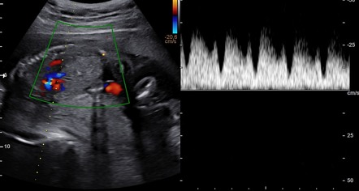
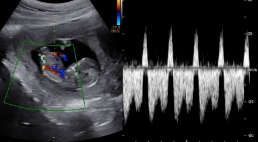

Página 15 · Sofrimento fetal crônico
Ducto venoso: a onda A e a função cardíaca fetal
Quando se estuda o ducto e o que ele avalia
Quando se estuda o ducto e o que ele avalia. O ducto venoso é estudado especialmente no feto muito prematuro já centralizado ou com diástole zero — avalia a função cardíaca fetal. É o vaso do “quão perto do óbito”, o degrau mais fundo do arco crônico.
As três ondas e a onda A
As três ondas e a onda A. O traçado do ducto venoso tem três ondas — por ser território venoso: sístole (contração ventricular), diástole (relaxamento ventricular) e onda A. A onda A é a que interessa aqui.
Interativo: alterne pressão normal/alta e veja a onda A virar.
A onda A reflete a contração do átrio direito. Com pressão intracardíaca alta, o sangue reflui ao território venoso e a onda A, normalmente positiva, torna-se negativa — indicação de parto.A onda A = átrio direito
A onda A = átrio direito. A onda A reflete a contração do átrio direito. Guardar essa origem é o que torna o próximo passo (por que ela reverte) compreensível, e não decorado.
O ducto no 1º trimestre (uso distinto)
O ducto no 1º trimestre (uso distinto). Um uso à parte, que a banca pode cobrar: no primeiro trimestre, o ducto venoso serve como rastreamento de malformação fetal e marcador de cromossomopatia (muitas cromossomopatias dão malformação cardíaca). É um uso distinto da avaliação da onda A no segundo/terceiro trimestre — vale registrar que existe, sem misturar com a função cardíaca do feto maior.
O normal: onda A positiva
O normal: onda A positiva. Com o feto maior, o ducto mostra se a função cardíaca está boa ou se há comprometimento e risco de insuficiência cardíaca e óbito. O normal é a onda A positiva, acima da linha zero — avaliação visual, não número decorado.

Onda A positiva (normal, acima da linha zero)
Onda A negativa/reversa (abaixo da linha zero)Traçado trifásico (sístole, diástole, onda A). No normal, a onda A é anterógrada, acima da linha zero; no patológico, inverte-se abaixo da linha de base — aumento da pressão atrial direita, risco iminente de óbito. Onda A negativa → parto.
Ayush Goel, Radiopaedia.org — Ductus venosus flow (rID 51733) e reverse A wave (rID 54485) · fonte / licença: CC BY-NC-SA 3.0
Onda A negativa → parto
Onda A negativa → parto. A virada grave: onda A negativa → parto 🚨. O átrio direito contrai e o sangue reflui para o território venoso porque a pressão nas câmaras está muito alta — a função cardíaca está comprometida, com risco de óbito muito alto.
Sulfato de magnésio abaixo de 32 semanas
Sulfato de magnésio < 32 semanas. Antes do parto por onda A negativa, no máximo sulfato de magnésio como neuroprotetor — indicado com menos de 32 semanas (até 31 semanas e 6 dias, sem incluir a 32ª), aplicado na mãe para proteger o feto. É a única medida que ainda cabe antes de resolver.
Quiz — fixação
Onda A do ducto venoso negativa em feto de 30 semanas. Conduta?
- Gabarito A. Onda A negativa = função cardíaca comprometida, risco de óbito alto → parto; < 32 sem cabe o sulfato de Mg neuroprotetor.
- B onda A negativa é grave, nunca normal (o normal é positiva).
- C alta é inconcebível nesse cenário; corticoide sozinho não resolve o risco iminente.
- D esperar uma semana com onda A negativa é aceitar o óbito.
A onda A do ducto venoso reflete qual evento, e por que se torna negativa na insuficiência cardíaca fetal?
- Gabarito A. Onda A = átrio direito; pressão alta → refluxo venoso → onda A negativa.
- B a sístole é ventricular; a onda A é atrial — e o mecanismo é pressão/refluxo, não bradicardia.
- C a diástole é o relaxamento ventricular, não a onda A.
- D não se trata de valva pulmonar; a origem é a contração atrial direita.
Sobre o sulfato de magnésio como neuroprotetor nesse contexto, é correto:
- Gabarito A. Neuroproteção fetal < 32 sem (até 31s6d), materna.
- B a janela é abaixo de 32 semanas — não “qualquer idade”.
- C é aplicado na mãe, antes do parto, para proteger o feto.
- D não substitui o parto — é o que cabe antes dele.